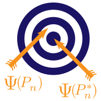
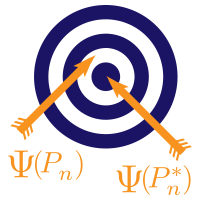

Welcome!
This open source, reproducible set of vignettes accompanies a short course titled “Targeted Learning: Bridging Machine Learning with Causal and Statistical Inference,” given as part of the Harvard Catalyst Biostatistics Program in November 2024. The slide deck for this short course are available at https://github.com/tlverse/catalyst2024-workshop/blob/master/slides/catalyst2024slides.pdf
The set of vignettes focuses on demonstrating how to apply Targeted Learning
methodology in practice using the tlverse software
ecosystem, a set of R packages that provide an
implementation of targeted maximum likelihood (or minimum loss-based)
estimation based on the mathematical underpinnings of the methodology. These
materials are derived from a working draft of the book Targeted Learning in
R: Causal Data Science with the tlverse Software
Ecosystem, which includes in-depth
discussion of these topics and much more, and may serve as a useful reference
to accompany these short course materials. Please note that the book is very
much in a draft phase and is made publicly available for comment, not as a
error-free reference. The book is aimed at non-statistician scientists who may
wish to learn about the Targeted Learning framework and apply the ideas using
the tlverse software suite.
 

Important links
-
Load R environment: Please set up the
Rvirtual environment using the instructions. If you experiencing issues with theRenvironment, you may install the relevant software packages before the short course using the installation script. - You will probably exceed the GitHub API rate limit during this installation, which will throw an error. This issue and the solution are addressed here.
Course description
In fields ranging from public health and medicine to political science and economics, great care is required to disentangle intricate causal relationships using real-world data and inform decision-making efforts. Causal inference has emerged as a methodological framework for translating substantive questions into well-defined causal estimands, expressing identification assumptions necessary for these to be learned from data, and estimating the resultant quantities via standardization (i.e., outcome regression) and inverse probability weighting. However, such progress has failed to keep pace with developments in machine learning; thus, the practice of causal inference is often marred by over-reliance on restrictive modeling practices. The Targeted Learning (TL) paradigm presents a solution to this problem by unifying aspects of semi-parametric statistical theory, machine learning, and causal inference. The result is a methodological toolbox for evaluating causal effects via state-of-the-art estimators that are both robust (to model misspecification) and efficient (minimal variance, i.e., narrowest possible confidence intervals). This short course introduces the TL paradigm, beginning with the guiding philosophy and underlying scientific motivations and going on to discuss estimation algorithms and their practical implementation through open-source software tools (e.g., the TLverse: https://github.com/tlverse), addressing basic theoretical underpinnings along the way. Specific topics to be covered include targeted maximum likelihood estimation (TMLE) and collaborative TMLE (C-TMLE) for confounder selection (and, time permitting, adaptive TMLE (A-TMLE) for hybrid designs that combine experimental and external data); TMLE algorithms to estimate the causal effects of interventions on binary and continuous exposures; complications for addressing time-varying confounding and/or censoring; and incorporating machine learning via the super learner and highly adaptive lasso algorithms. This short course incorporates a mix of case studies, discussion, and hands-on programming exercises to allow participants to build familiarity with techniques and tools that will translate to improvements in real-world data analytic practice.
In addition to discussion, this short course will incorporate both interactive
activities and hands-on, guided R programming exercises, to allow participants
the opportunity to familiarize themselves with methodology and tools that will
translate to real-world data analysis. It is highly recommended for participants
to have an understanding of basic statistical concepts such as confounding,
probability distributions, confidence intervals, hypothesis testing, and
regression. Advanced knowledge of mathematical statistics is useful but not
necessary. Familiarity with the R programming language will be essential.
Schedule
- 8:30-9:00am: Registration and introductions
- 9:00am-12:15pm: Introductory topics, with coffee break at ~10:30am
- 12:15-1:00pm: Lunch break with open discussion
- 1:00-4:00pm: Advanced topics, with coffee break at ~2:30pm
- 4:00-4:30pm: Concluding remarks and closing discussion
About the instructors
Mark van der Laan
Mark van der Laan, PhD, is Professor of Biostatistics and Statistics at UC
Berkeley. His research interests include statistical methods in computational
biology, survival analysis, censored data, adaptive designs, targeted maximum
likelihood estimation, causal inference, data-adaptive loss-based learning, and
multiple testing. His research group developed loss-based super learning in
semiparametric models, based on cross-validation, as a generic optimal tool for
the estimation of infinite-dimensional parameters, such as nonparametric density
estimation and prediction with both censored and uncensored data. Building on
this work, his research group developed targeted maximum likelihood estimation
for a target parameter of the data-generating distribution in arbitrary
semiparametric and nonparametric models, as a generic optimal methodology for
statistical and causal inference, including the highly adaptive lasso. Most
recently, Mark’s group has partially focused in part on the development of a
centralized, principled set of software tools for targeted learning, the
tlverse.
Nima Hejazi
Nima Hejazi, PhD, is an
Assistant Professor of Biostatistics at the Harvard T.H. Chan School of Public
Health. He received his PhD in biostatistics at UC Berkeley and afterwards held
an NSF mathematical sciences postdoctoral research fellowship, during which
time he served as a core member of the COVID-19 Prevention Network’s
biostatistics response team. Nima’s research interests sit at the intersection
of causal inference, machine learning, semiparametric estimation, and
computational statistics; areas of recent emphasis have included causal
mediation analysis, efficient estimation under outcome-dependent and/or biased
sampling designs, and debiased/targeted machine learning incorporating sieve
estimation. His recent work has primarily been driven by applications in
clinical trials and observational studies of the efficacy of vaccines and
therapeutics. Nima is passionate about statistical computing and open source
software design standards for statistical data science, and he has co-led or
contributed significantly to several core tlverse packages (hal9001, sl3,
tmle3, origami, tmle3shift, tmle3mediate).